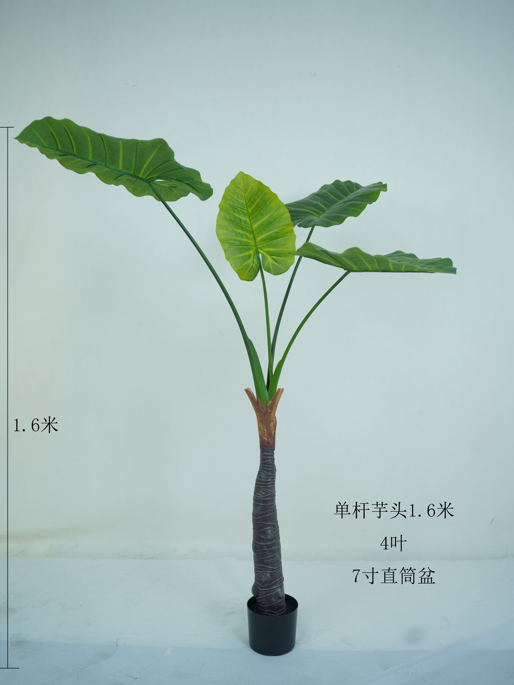
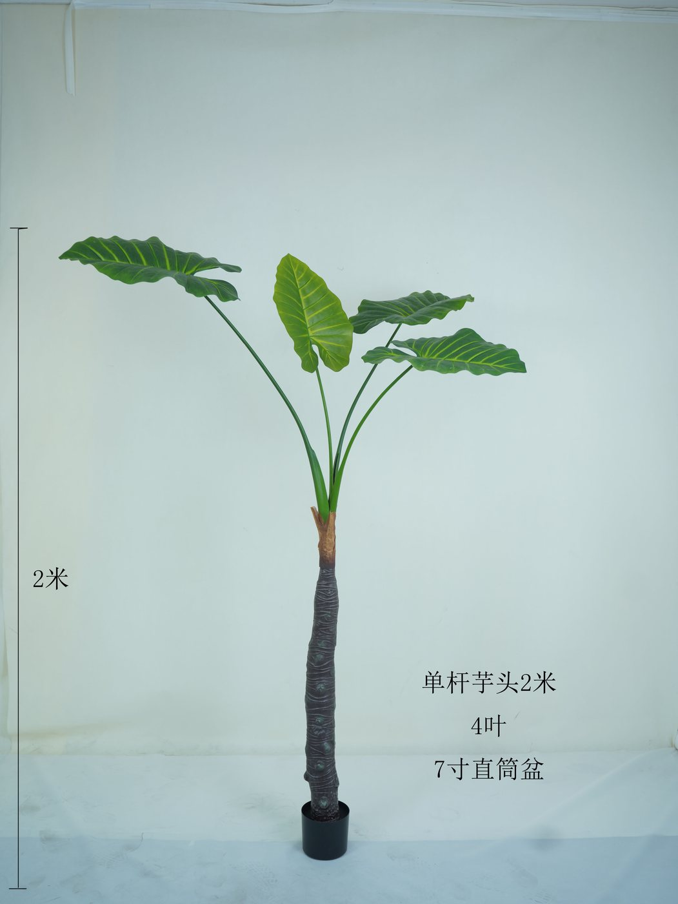

Palms & Tropicals
Single-Stem Taro
Single-Stem Taro is a tropical focal point suitable for hotel lobbies, resorts, and large indoor planters. Photos show the actual product; exact dimensions, packing, MOQ, lead time and price are confirmed by the seller on inquiry.
Opens your email application; sending happens there.
Product information
Single-Stem Taro is a tropical focal point suitable for hotel lobbies, resorts, and large indoor planters. Photos show the actual product; exact dimensions, packing, MOQ, lead time and price are confirmed by the seller on inquiry.
Specifications
| Product code | LC-N036 |
|---|